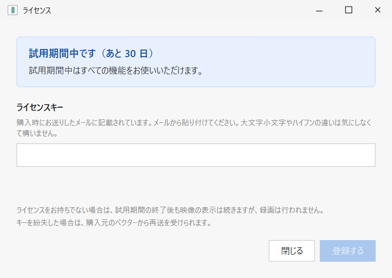
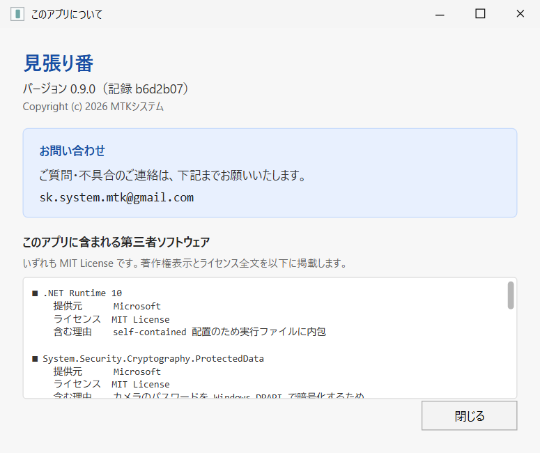

対応条件・困ったとき
購入前に確かめることと、カメラ・映像・録画・警告の問題を、症状から順番に切り分けます。
現行画面の配置・文言を再現した説明図アプリから撮影したスクリーンショットではありませんキー・版・問い合わせ例は公開用データ
Before purchase
購入前に確認すること
条件はパソコン側とカメラ側に分かれます。どちらも満たす必要があります。
1. パソコン（Windows）の条件
| 項目 | 必要な条件 | 確認方法 |
|---|---|---|
| OS | Windows 10 バージョン1809以降、またはWindows 11。64bit。 | 設定 → システム → バージョン情報。 |
| 画面 | 1280×720以上を推奨。 | 設定 → システム → ディスプレイ。 |
| 空き容量 | アプリ本体は約60MB。別に録画の保存容量が必要。 | 静かな1台で30日約4GBから、動きが多いと約42GBの実測例。 |
| ランタイム | 追加インストールは不要。ZIPを展開して起動します。 | .NETやコーデックを別途入れる必要はありません。 |
| ネットワーク | カメラと同じ家庭内LANにいること。 | ゲストWi‑Fi、VPN、ネットワーク分離を避けて試す。 |
2. カメラの条件
| 項目 | 必要な条件 | 確認方法 |
|---|---|---|
| 種類 | ネットワークカメラ（IPカメラ）。USB接続のWebカメラは対象外です。 | LANケーブルまたはWi‑Fiでネットワークにつながる製品。 |
| 規格 | ONVIFに対応していること。当ソフトはONVIFのMedia1（GetProfiles／GetStreamUri）で映像を取り出します。 | メーカー仕様の記載と、試用版の接続画面。 |
| 映像方式 | H.264で送れること。H.265（HEVC）専用の機種は使えません。 | カメラ設定で圧縮方式をH.264へ変更できるか。項目が無ければH.265専用です。 |
| ONVIFの設定 | 機種によっては、カメラ側でONVIFを有効化し、ONVIF用のID・パスワードを作る必要があります。 | カメラのアプリや設定画面（スマホアプリのログインとは別のことがあります）。 |
| 音声（任意） | 録音したい場合のみ、カメラが音声を送れること。初期設定では音声は切です。 | 音声非対応のカメラでは、入にしても録音されません。 |
Compatibility
実機で確認できた範囲
| カメラ | 結果 | 確認した範囲 |
|---|---|---|
| TP-Link Tapo C520WS | 確認済み | 自動発見、接続、映像表示、動体検知録画。日中の実測で2560×1440・25.00fps。 |
| X3-WR-V-BL | 非対応 | H.265専用で、H.264へ変更できないため。 |
| その他のONVIF機種 | 未確認 | 規格に対応していても、メーカーごとの実装差があります。試用で確認が必要です。 |
Limits
現在できないこと
- H.265（HEVC）だけを送るカメラ
- USB接続のWebカメラ
- 外出先からインターネット経由で見ること
- メール・LINEなど外部サービスへの通知
- カメラ本体のスピーカーから警報を鳴らすこと
- すべてのONVIF機種での動作保証
- カメラが音声を送らない場合の録音
- IPアドレス指定で追加したカメラの、後からの画質変更
- 警報音へMP3を使うこと（WAVのみ）
Troubleshooting 01
カメラが見つからない

- カメラ側でONVIF、または外部接続用のカメラアカウントを有効にします。
- パソコンとカメラを同じネットワークへ接続します。ゲストWi‑FiとVPNを避けます。
- Windowsのネットワークを「プライベート」にし、ファイアウォールで見張り番を許可します。
- 自動探索に応答しない場合は、IPアドレスを指定して追加します。
Troubleshooting 02
ID・パスワードを入れても映像が出ない
「IDまたはパスワードが違います」と出る
スマートフォンアプリのログインではなく、カメラ本体へ接続するためのアカウントか確認します。大文字・小文字、前後の空白も確認します。
登録済みカメラを初期化した後は、保存済みの情報が古い場合があります。入力し直してください。
H.265、HEVCと表示される
カメラ側の圧縮方式をH.264へ変更します。変更する項目が無い場合、そのカメラはH.265専用のため利用できません。
映像が途中で止まる
機種によっては同じ映像へ1つしか接続できません。スマートフォンの純正アプリで同じ映像を開いている場合は閉じてから確認します。
ネットワークやカメラにより、ライブ表示が数秒遅れる場合があります。
Troubleshooting 03
映像は出るが録画されない
- 右上に「録画中」が出るか確認します。
- 状態が「停止中」ではないか確認します。
- スマートフォンの純正アプリで同じ映像を開いていないか確認します。
- 「録画を保存できません」が出ていないか確認します。
- 監視時間外、検知しない場所、感度、動きが続く時間を確認します。
- ライブ映像そのものが止まっていないか確認します。
- 30日間の試用期間が終了していないか確認します。
録画が多すぎる場合は、検知調整の順番に沿って、まず除外範囲から見直します。
Troubleshooting 04
録画が開けない・保存先がいっぱい
一覧に「再生できません」と出る
録画中の電源断やファイルの欠損が考えられます。必要な場合は、そのMP4と同名JSONを組にして問い合わせます。
一覧に録画が出ない
「最新の状態にする」を押します。保存先を変更した場合、以前の録画は新しい場所へ自動では移りません。
ドライブの空きが少ない
初期設定では空き10GBを下回ると古い録画から整理します。残したい録画を別の場所へコピーしてから、保存日数・合計容量・保存先を見直します。
Windows security
SmartScreenやウイルス対策ソフトの警告
見張り番には現在コード署名を付けていません。また、カメラ映像の常時受信、家庭内ネットワークの探索、Windows自動起動という動きから、警告や誤検出が起きる可能性があります。
- SmartScreenでは「詳細情報」から発行元とファイル名を確認して判断します。
- 隔離された場合は、正規の入手元を確認したうえで、利用者自身の判断で復元・許可します。
- アプリが通信するのは同じLAN内のカメラです。利用状況の収集、広告、インターネットへの情報送信は行いません。
Trial & license
30日間の試用とライセンス

- 上の欄で、試用中・終了間近・期限切れ・登録済みの状態を確認します。
- 正式公開後、購入時のメールにあるキーを貼り付けます。
- 「登録する」を押します。大文字小文字やハイフンの違いは気にしなくて構いません。
試用中はすべての機能を利用できます。期間が終わると新しい録画は止まりますが、ライブ表示は続きます。 それまでの録画は消えず、再生と日時入り書き出しを続けられます。
Support
問い合わせる前に、版と発生時刻を確認

- 「このアプリについて」で、バージョンと記録番号を確認します。
- 問題が起きた日時とタイムゾーン、Windowsの版、カメラのメーカー・型番を控えます。
- 録画の問題では、必要な録画1本と同名JSONだけを用意します。
- sk.system.mtk@gmail.com へ連絡します。